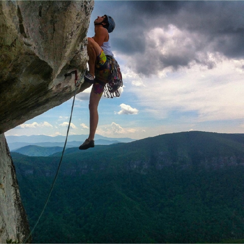

 Rock climbing is an activity in which participants climb up, down or across natural rock formations or artificial rock walls. The goal is to reach the summit of a formation or the endpoint of a usually pre-defined route without falling. To successfully complete a climb, one must return to the base of the route safely. Due to the length and extended endurance required, accidents are more likely to happen on descent than ascent, especially on the larger multiple pitches (class III- IV and /or multi-day grades IV-VI climbs). Rock climbing competitions have the objectives of either completing the route in the quickest possible time or attaining the farthest point on an increasingly difficult route. Scrambling, another activity involving the scaling of hills and similar formations, is similar to rock climbing. However, rock climbing is generally differentiated by its sustained use of hands to support the climber's weight as well as to provide balance.
Rock climbing is a physically and mentally demanding sport, one that often tests a climber's strength, endurance, agility and balance along with mental control. It can be a dangerous activity and knowledge of proper climbing techniques and usage of specialised climbing equipment is crucial for the safe completion of routes. Because of the wide range and variety of rock formations around the world, rock climbing has been separated into several different styles and sub-disciplines.